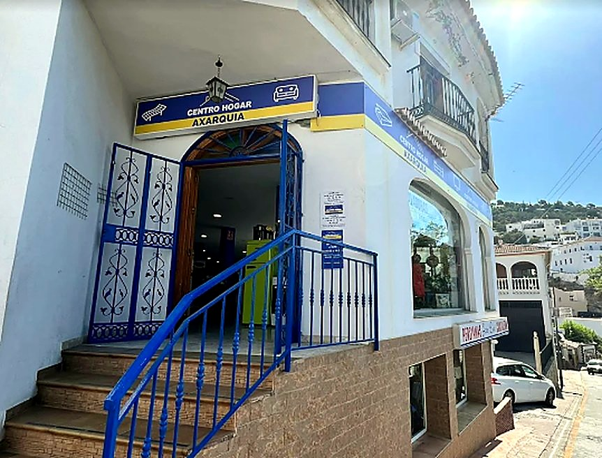
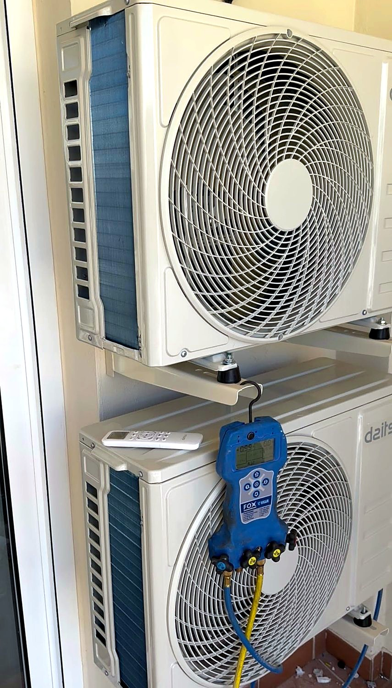
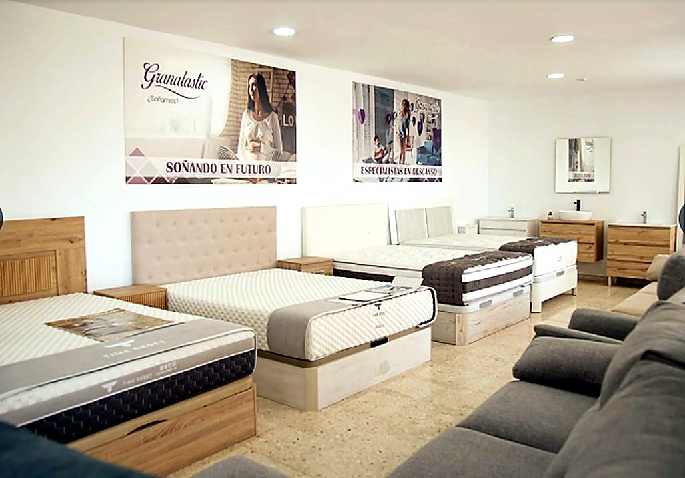
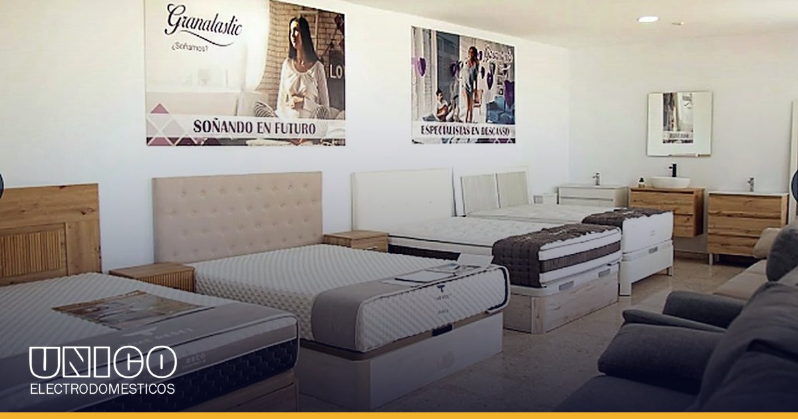

Miriam berät Sie
Centro Hogar Axarquía · Cómpeta
Adresse: Av. de la Constitución, 2, 29754 Cómpeta (Málaga)
Telefon: 663 83 35 77
Mo–Fr 10:00–13:30 & 17:30–20:30 · Sa 10:00–13:30 · So geschlossen
Küchen, Möbel, Elektrogeräte, Klimaanlagen und Schlaflösungen in der Axarquía. Wir beraten, liefern und installieren.
Angebot anfragenProdukte und ServicesMein Geschäft finden


Angebote mit Ablaufdatum. Fragen Sie nach Verfügbarkeit und Abholgeschäft.
Alles zur Ausstattung Ihrer Wohnung aus einer Hand.
Wir helfen Ihnen, Ihre Küche mit einem Team zu planen, auszustatten und zu montieren, vom Aufmaß bis zur Installation der Geräte.
Alle Arten von Möbeln für jeden Raum, zu guten Preisen, mit Lieferung und Montage, damit Sie sie einfach genießen können.
Waschmaschinen, Kühlschränke, Geschirrspüler, Backöfen, Kochfelder und Hauben, mit Lieferung, Installation und Abholung des Altgeräts nach Angebot.
Wir installieren über 3.000 Klimaanlagen pro Jahr für Wohnungen, Immobilien und Gewerberäume, mit führenden Marken und allen Gerätetypen.
Alle Arten von Matratzen, auch medizinische Modelle, damit Sie Größe und Festigkeit passend zu Ihrem Schlaf wählen können.
Wir arbeiten mit führenden Marken und allen Gerätetypen, für Wohnungen, Immobilien und Gewerberäume. Gute Preise, Qualität und professionelle Installation.



Wir beraten vom Aufmaß bis zur Montage, mit den Geräten, die Sie brauchen. Gute Preise, spürbare Qualität und Finanzierung.
Angebot anfragen

Sofas, Wohnzimmer, Schlafzimmer, Sideboards, Tische, Stühle und Zubehör: alle Arten von Möbeln, mit Lieferung und Montage.




Nach Angebot. Fragen Sie Carlos per WhatsApp.
Wir liefern Ihren Einkauf nach Hause.
Elektrogeräte, Klimaanlagen und Möbel.
Abholung Ihres Altgeräts ohne Aufpreis.
Drei Geschäfte: zwei von Centro Hogar Único in Torre del Mar und Centro Hogar Axarquía in Cómpeta.

Adresse: Av. de la Constitución, 2, 29754 Cómpeta (Málaga)
Telefon: 663 83 35 77
Mo–Fr 10:00–13:30 & 17:30–20:30 · Sa 10:00–13:30 · So geschlossen
Adresse: Av. de Andalucía, 38, 29740 Torre del Mar (Málaga)
Telefon: 952 54 09 32
Mo–Fr 10:00–13:30 & 17:30–20:30 · Sa 10:00–13:30 · So geschlossen
Adresse: C. Azucarera, 2, Torre del Mar (Málaga)
Mo–Fr 10:00–13:30 & 17:30–20:30 · Sa 10:00–13:30 · So geschlossen
Kauf- und Beratungsratgeber.

Wir brauchen die Maße jeder Wand und die Höhe, die Lage von Wasser, Gas und Steckdosen sowie ein Foto. Entsche…

Messen Sie Breite, Tiefe und Höhe des Platzes und die Türöffnung. Wählen Sie die Kapazität nach Haushaltsgröße…

Messen Sie Raum, Türen und Treppenhaus oder Aufzug, damit das Möbel hineinpasst. Denken Sie zuerst an den Allt…

Nennen Sie Raumgröße, Ausrichtung, Sonneneinstrahlung und den möglichen Standort des Außengeräts. Ein Foto hil…

Die Größe sollte Ihre Körperlänge übertreffen und Platz für alle bieten. Festigkeit ist persönlicher Komfort: …

Für Hauptwohnsitz, Zweitwohnung oder Ferienunterkunft koordiniert ein Team Küche, Geräte, Möbel und Klima mit …
Jeder Facebook- und TikTok-Beitrag, mit Bild, Zusammenfassung und Schlagwörtern.
Auf Google veröffentlichte Bewertungen zum Geschäft Centro Hogar Axarquía in Cómpeta, in der Originalsprache. Sie beziehen sich auf dieses Geschäft, nicht auf die Geschäfte in Torre del Mar.
“From entering the store in Cómpeta looking for a good quality bed having recently moved to the area from the UK. The advice and support we got was outstanding …”
“Miri is really patient and helpful, takes her time to explain and answer my endless questions! Bought gas hob, bed & bedframe ...so far. Good communication …”
“Miriam is extremely helpful. We are pleased with our new air con unit and she organized installation too at a very reasonable price. We will definitely use Centro Hogar again.”
“No he ido nunca a esta tienda, pero hoy he llamado por teléfono y me han atendido muy bien …”
“Compré una lavadora y estoy encantada. Pero lo que realmente quiero destacar es la atención de la compradora. La …”
“Gran variedad de muebles, electrodomésticos, colchones y todo lo que necesites para equipar tu casa. Atención inmejorable, Miriam podrá orientarte y ayudarte a …”
“Muy buena atención al cliente desde primera hora, nos aconsejó en todo momento para tomar la mejor decisión, una vez montado los muebles, fue mucho mejor de lo …”
“Ha sido una muy buena experiencia. Tuve que hacer el pedido por WhatsApp por no vivir cerca y Miriam fue de lo más atenta y comprensiva. Me ayudó mucho a elegir y tuvo mucha paciencia conmigo. Volvería a repetir seguro y repetiré.”
“very good selection, wonderful service on site, fantastic service with home delivery as well as installation and removal of the old unit.”
“Muy buena atención al cliente, Míriam es maravillosa y te puede ayudar con todo lo que necesites y asesorarte genial. Sin duda volvería a repetir. Muchas gracias por tu ayuda.”
“Un gusto venir a comprar aquí. El asesoramiento a lo que busques es excepcional, te recomienda siempre lo …”
“Muy buen trato, hay mucha variedad y si algo no tiene te lo trae de un día a otro”
“Tienda muy bien situada con muchas opciones y la vendedora es muy profesional y muy eficiente lo recomiendo”
“Wat ben ik blij dat deze winkel in Competa zit. Ik heb hier al veel spullen gekocht waarbij Miri ons heel goed heeft geholpen. Ze is met vragen heel snel in de communicatie wat we erg waarderen.”
Carlos betreut Sie persönlich per WhatsApp: Beratung, Angebot, Lieferung und Installation.
Mit Carlos sprechenAlle Anfragen zu Kauf, Angebot, Installation, Transport, Montage und Abholung laufen über WhatsApp.